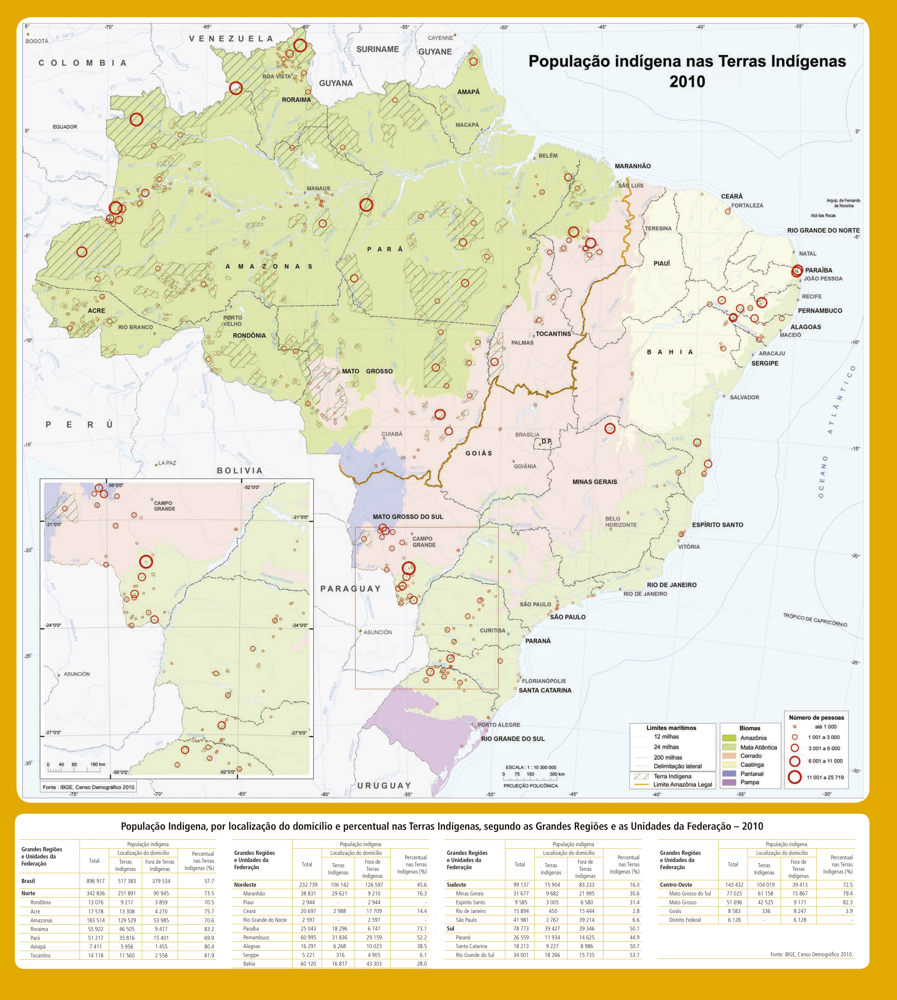
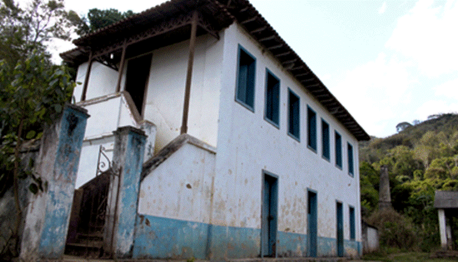
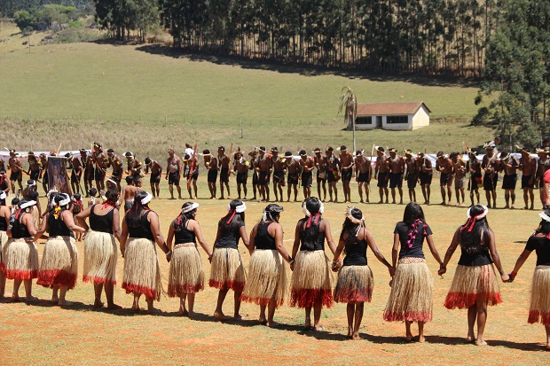

Seria injusto ter uma seção do site dedicada a história de Minas sem uma seção para os povos indígenas quando
sabemos que eles foram os primeiros no nosso estado.
No geral
Segundo o censo de 2010, realizado pelo IBGE, a população indígena de Minas Gerais era de 31.677, sendo que desses apenas
9.682 viviam em terras indígenas. Segundo o
CEDEFES há cerca de 20 etnias,
como os Krenak, Pataxó e Xakriabá,e mesmo assim têm como terras reconhecidas menos de 0,2% do território mineiro.

Recorte de imagem fornecida pelo IBGE sobre os povos indígenas do Brasil, onde pode-se visualizar uma tabela falando sobre a população indígena de cada estado.
Violência
É impossível ignorar a a violência contra os indígenas que se inicia no processo de colonização e perdura até os dias atuais, mesmo que de formas deiferentes.
A falta de direitos sobre a terra é uma violência que faz com que os indígenas tenham que lutar por algo que é
garantido através da constituição.Outra violência sofrida é o apagamento da cultura indígena, através da proibição das
línguas indígenas e da imposição do português, além da forma como os indígenas foram catequisados, sendo obrigados a deixar de
lado suas crenças para adotar o cristianismo. Muitos povos indígenas foram exterminados, com armas ou com doenças, no período colonial,
e há pouco tempo, no fim dos anos 1960 durante a ditadura militar, foi criada uma cadeia para indígenas em Minas Gerais,
esse lugar se chamava Reformatório Krenak, e era basicamente um campo de trabalho forçado para indígenas., junto a isso há a criação da Grin, que era uma forma de violentar os indígenas
que eram obrigados a servir como guardas e também para os indígenas que os guardas deveriam repreender.

Imagem do reformatório Krenak
Influências
Agora vamos falar sobre as influências indígenas na cultura mineira. Seja nas lendas, como
a lenda do Amantikir
sobre a Serra da Mantiqueira, no artesanato, principalmente com as cerâmicas, na
culinária, por exemplo com pratos que derivam da mandioca,
ou no esporte.

Foto dos Jogos Indígenas: Elian Oliveira/ACS/SEEMG
Se você se interessou pelo tema seguem abaixo algumas recomendações de conteúdos sobre os povos indígenas de Minas Gerais: